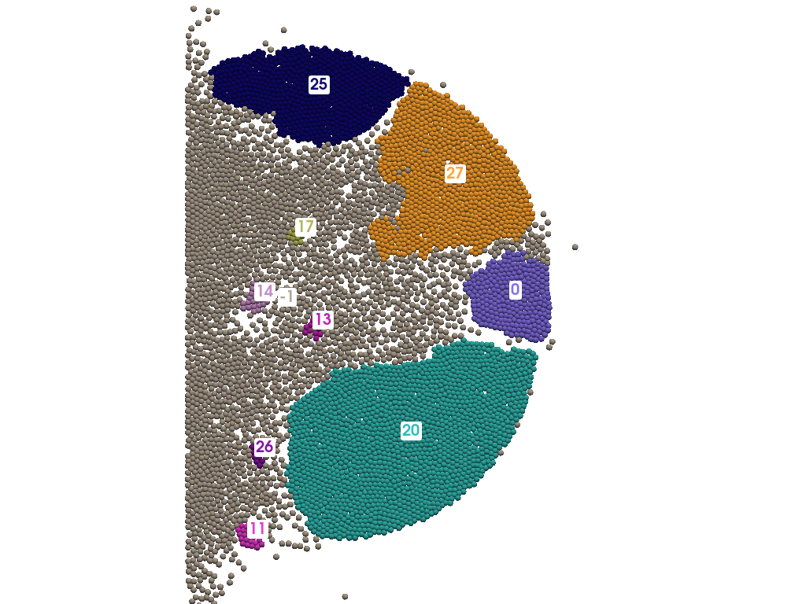
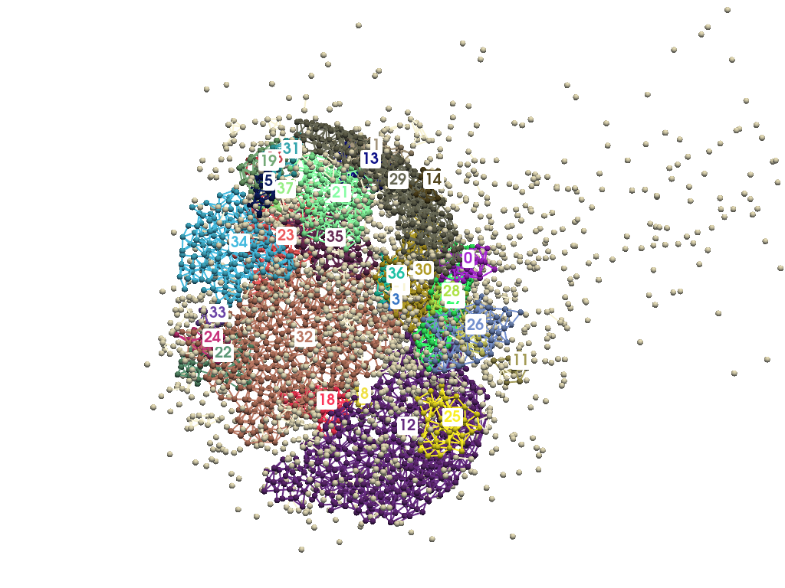

Examples
2D/3D Fragmentation Example
This example demonstrates how to use Crispy to load a set of files obtained from a bonded particle based simulation and visualize fragmentation over time.
Code Example
# load files
files = cp.load_files("files/", extension="agdd")
# detect fragments from stacked files
frag_dict = cp.detect_fragment(files)
# plot fragments at iteration 10
cp.plot(frag_dict[9])
After loading files and detect fragments, this will generate one plot of the fragments, colored and labelled.
Note
Make sure the work directory contains valid input files, the iteration sorting process is based on filename.
Preview of Generated Images
 {kind=link}
{kind=link}
Run the Example
The full 2D fragmentation example is available in the project repository, inside the examples/2D_impact folder.
To run it locally, use the following commands:
cd examples/2D_impact
python 2D_impact.py
This script will execute the 2D fragmentation detection of a disc impact.
Note
Make sure you have installed all required dependencies listed in the Installation section before running the example.
You can inspect or modify the source code here:
examples/2D_impact/2D_impact.pyinput files are stored in
examples/2D_impact/files/
For more details on input file format, see the Quick Start section.
Note
A full 3D example of a hollow sphere impact is also available inside the examples/3D_impact folder.
Fragment Analysis
Crispy also allows to make classic analysis of fragments through several tools.
Stackplot
This function shows the evolution of the space ratio taken by each fragment over iterations.
To run it locally, use the following commands:
# load files
files = cp.load_files("files/", extension="agdd")
# detect fragments from stacked files
frag_dict = cp.detect_fragment(files)
# stackplot of the fragments over iterations
cp.stackplot([f for fgroup in frag_dict.values() for f in fgroup])
{kind=link}
Histograms
Several properties can be visualized on histograms, such as the bonds/nodes repatition, the volume, area, sphericity distribution, using:
# load files
files = cp.load_files("files/", extension="agdd")
# detect fragments from stacked files
frag_dict = cp.detect_fragment(files)
# statistic histogram of fragments at iteration n°50
cp.histplot(frag_dict[49])
{kind=link}
Statistics
Finally, the statistics of one iteration can be stored and saved in a .txt file. The stats will also be printed on terminal:
# load files
files = cp.load_files("files/", extension="agdd")
# detect fragments from stacked files
frag_dict = cp.detect_fragment(files)
# statistics of fragments at iteration n°50
cp.stats(frag_dict[49])
--- Num. of nodes ---
Mean: 603.8000
Median: 149.0000
Min: 11.0000
Max: 2532.0000
Std: 818.6880
--- Num. of bonds ---
Mean: 981.6000
Median: 115.0000
Min: 19.0000
Max: 4727.0000
Std: 1470.1197
--- Space ratio ---
Mean: 10.0000
Median: 2.4677
Min: 0.1822
Max: 41.9344
Std: 13.5589
--- Sphericity ---
Mean: 0.8024
Median: 0.8321
Min: 0.6421
Max: 0.9139
Std: 0.0865
--- Area ---
Mean: 0.0004
Median: 0.0000
Min: 0.0000
Max: 0.0030
Std: 0.0009
--- Perimeter ---
Mean: 0.0532
Median: 0.0224
Min: 0.0062
Max: 0.2442
Std: 0.0696